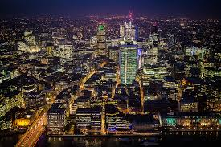

Música da Cidade ao Campo
INTRODUÇÃO
Quando ouve-se sobre unir as duas culturas por meio da música, muitas pessoas dizem ser impossível por serem muitos distintas, porém será isso verdade? Vamos analisar as diferenças e um pouco de cada cultura, para analisarmos como podemos tornar possível a junção das duas culturas.


*MÚSICA URBANA*
A música urbana geralmente retrata de condições e situações cotidianas no meio urbano, como a desigualdade social, desvalorização de classes, pobreza, rotina acelerada, busca por identidade e até convivências sociais, com um forte caráter introspectivo e contestador em muitos desse gênero.
O Hip-Hop, por exemplo, nasceu da necessidade de expressão das comunidades, frequentemente citando a desigualdade, oferecendo um sentimento de resistência contra desigualdades tais como o racismo e classes econômicas. O Rock urbano porém tem um propósito um pouco diferente, trazendo consigo também reflexões filosóficas sobre a vida contemporânea. Enquanto o Pop e eletrônico, costumam explorar questões universais, como o amor, festas, e desafios do dia a dia da vida moderna.
*MÚSICA RURAL*
Em contrapartida, a música rural retrata a vida cotidiana simples do campo, abordando temas como contato com a natureza, dificuldades dos trabalhadores rurais e valores familiares. Gêneros como sertanejo, folk e música caipira trazem letras retratando temas como o amor, saudade e superação, mantendo viva a identidade cultural e histórica dessas regiões.